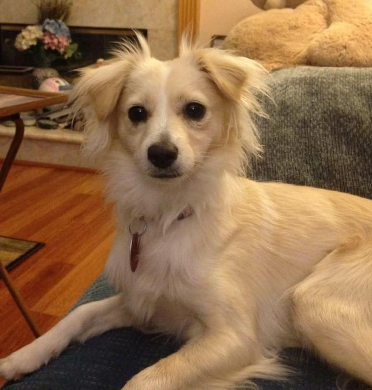
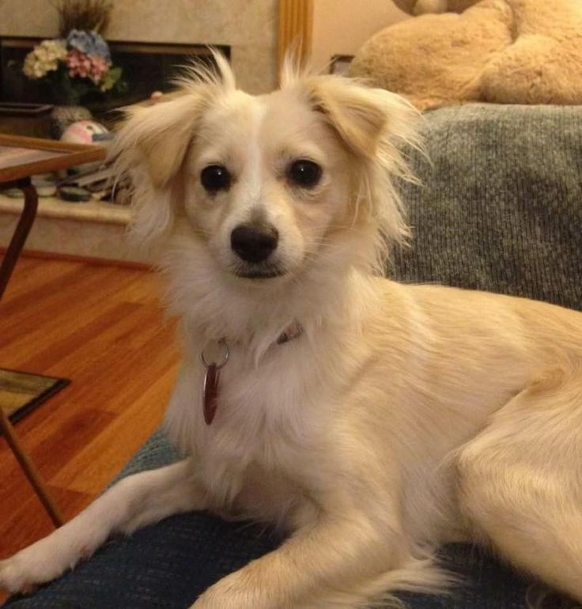

Find Your Perfect Match
Tell us what you are looking for in a fury friend, and we'll help you find them. This section allows users to specify their preferences and lifestyle considerations, helping the pet adoption website to suggest suitable pets for them.
Get Details 
